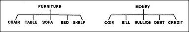
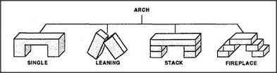

Uniframing doesn't always work. We often try to make an everyday idea precise — but just can't find much unity. Then, we can only accumulate collections of examples.
It certainly is hard to find any properties that all these share. Coins are hard and round and flat. Bills are thin and flexible. Bullion has unusual weight, and credits aren't even physical. We recognize them all as media of trade — but that won't help us recognize the things themselves. The situation is the same for furniture. It's not so hard to say what furniture is for — things that equip a room for living in. But when it comes to the objects themselves, it's even hard to find a uniframe for chair. Again, its function-role seems clear — a thing one can sit upon. The problem is that one can sit on almost anything — a bench, a floor, a tabletop, a horse, a stack of bricks, a rock. Even defining Arch has problems, since many things we recognize as arches just don't match our Block-Arch uniframe:
All these shapes could be described as shape with hole or blocks that bridge across a gap. But those descriptions would also admit many things we don't want to regard as arches. The simplest way to learn, when one can't find a uniframe, is to accumulate descriptions of experiences.
At first it may seem simpler to accumulate examples than to find more uniform ways to represent them. But later there's a price to pay for this: when we try to reason about things, accumulations can be nuisances — because then we'll be forced to find a different argument or explanation to justify each separate example. Most likely, different parts of our brains have evolved to use both kinds of strategies. Accumulations need not take longer to manipulate if all the examples can be handled at the same time, by separate agents that don't interfere with one another But once those processes begin to need each other's help, the whole society's efficiency will decline rapidly. Perhaps that slowing-down itself might be the stimulus that makes us start to try to unify — at least for processes we use frequently.
A simpler theory of when we start new uniframes would be that in the brain, there is an architectural constraint on how many K-lines are directly accessible to various types of agents. For example, the agents in a certain agency might be able to accumulate no more than about seven branches for each classification in a certain hierarchy. When more than that accumulate, the agency would be forced either to merge some examples into uniframes or to turn for help from somewhere else.